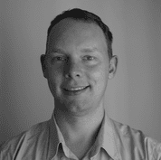

Frank holds a Masters Degree in Bio-medical Engineering from the University of Cape Town and a dual first degree in Electronic Engineering and Information Technology from University of Johannesburg. Prior to working at MobileODT, he held a European Commission Framework Program 7 fellowship under the iCarenet project (Iwit Lab Tel Aviv University / Edna Pasher and Associates), and a pre-doctoral fellowship with Dave Kelso's CIGHT lab at Northwestern University in Evanston.
If you're interested in making contact you can reach out on linkedin or check out my publications on Google Scholar.